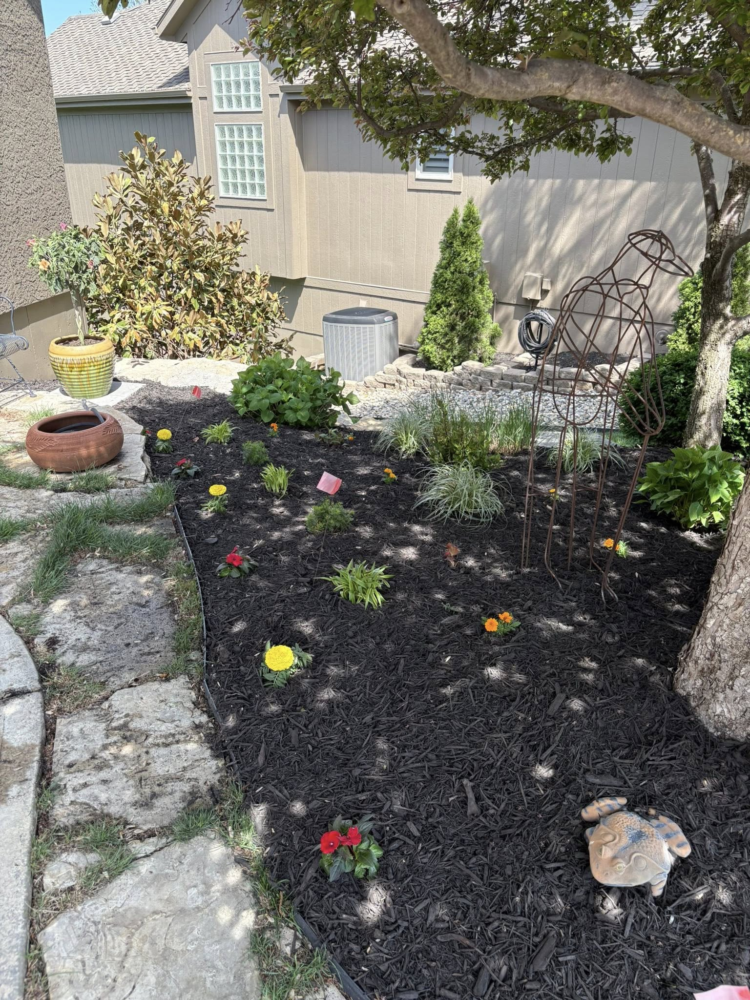

Lawn Mowing
Routine mowing, trimming, edging, and cleanup for a crisp, dependable finish.
Request service
Reliable residential and commercial property care throughout Manhattan, Alma, Wamego, and the surrounding Flint Hills.
From weekly mowing and detailed landscape improvements to commercial grounds maintenance and snow removal, we keep properties looking professional year-round.
Routine mowing, trimming, edging, and cleanup for a crisp, dependable finish.
Request serviceMulch, rock, edging, plantings, sod, drainage, bed renovation, and outdoor improvements.
Explore landscapingSpring and fall cleanup, leaf removal, pruning, debris hauling, and property resets.
Explore cleanupsProfessional grounds care for apartments, offices, retail, HOAs, and managed properties.
Commercial solutionsSeasonal planning, snow removal, sidewalk clearing, and ice control for commercial and residential properties.
Plan for winterDrag the slider to compare recent property transformations.


Cleanup, definition, and fresh decorative rock for a cleaner first impression.


A cleaner, sharper, low-maintenance entrance designed to reflect the property well.
We provide consistent, accountable exterior maintenance for properties that need to look cared for every week—not just on inspection day.

You work directly with an owner-operated company that takes pride in communication, reliability, and the final result.
KS Lawn Ranger is a local, fully insured lawn care and landscaping company serving homeowners, businesses, and managed properties throughout the Flint Hills. You get direct communication, clear expectations, and work backed by pride in the result.
A more personal owner story and photo will be added here next.
Tell us what you need and we’ll help you plan the next step.